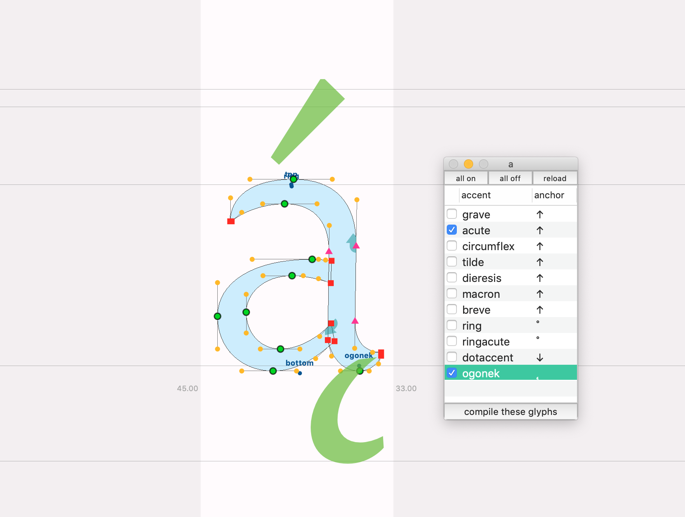
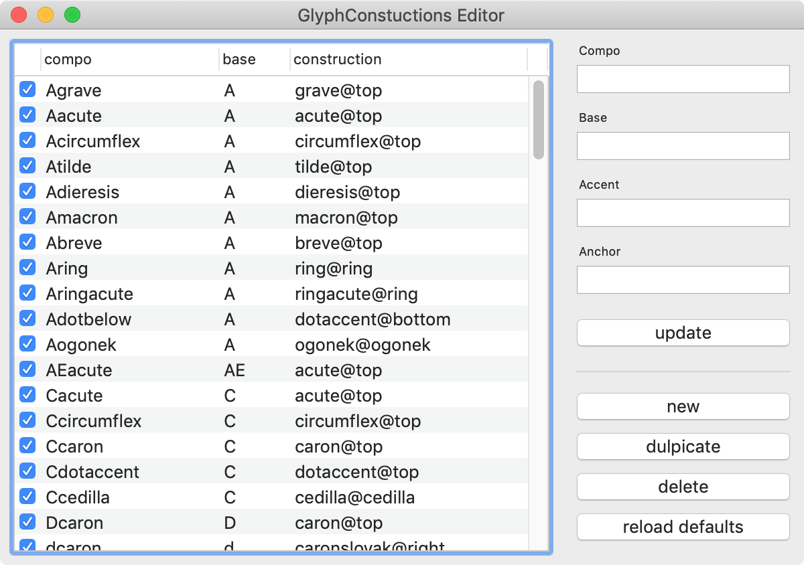
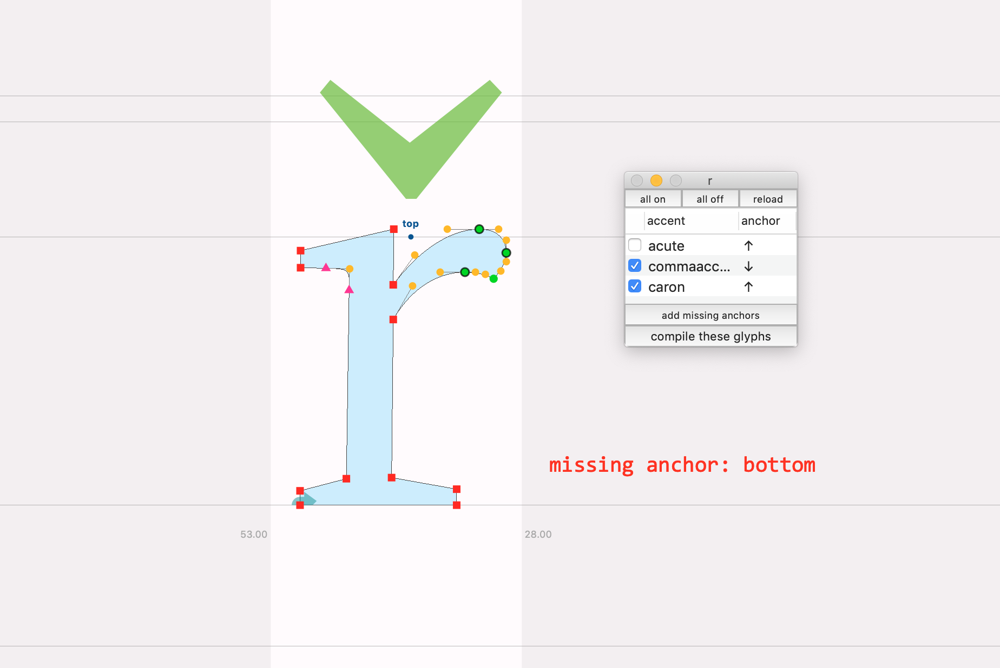

This is my approach on a flexible accents workflow.
It uses GlyphConstruction.
- A set of Constructions is stored in the font
- An Editor can easily edit/add/remove/activate individual Constructions
- For placing anchors, an Observer helps by drawing the accents on baseGlyphs in GlyphView
- A batch script compiles all Active Constructions in the font
But also:
- No double data! The majurity of the Constructions is the same for capitals and lowercase. Only care about the caps, the lowercase will follow. If the lowercase need special treatment, add only those
- Same for SmallCaps, those Constructions are the same as the normal Caps
- No need to worry about cap-variants in the Constructions. If the anchor if above a threshold the library is automatically searching for a cap-variant in the font and uses that if found
- The Observer warns you if anchors are missing and can place them roughly in the correct area
Here is a screencast, see it in action:
→ → Ğëț îŧ ỳǫůŗşėľf, főř fŕęẽ! ← ← ;)
   TODO:- screencast in action